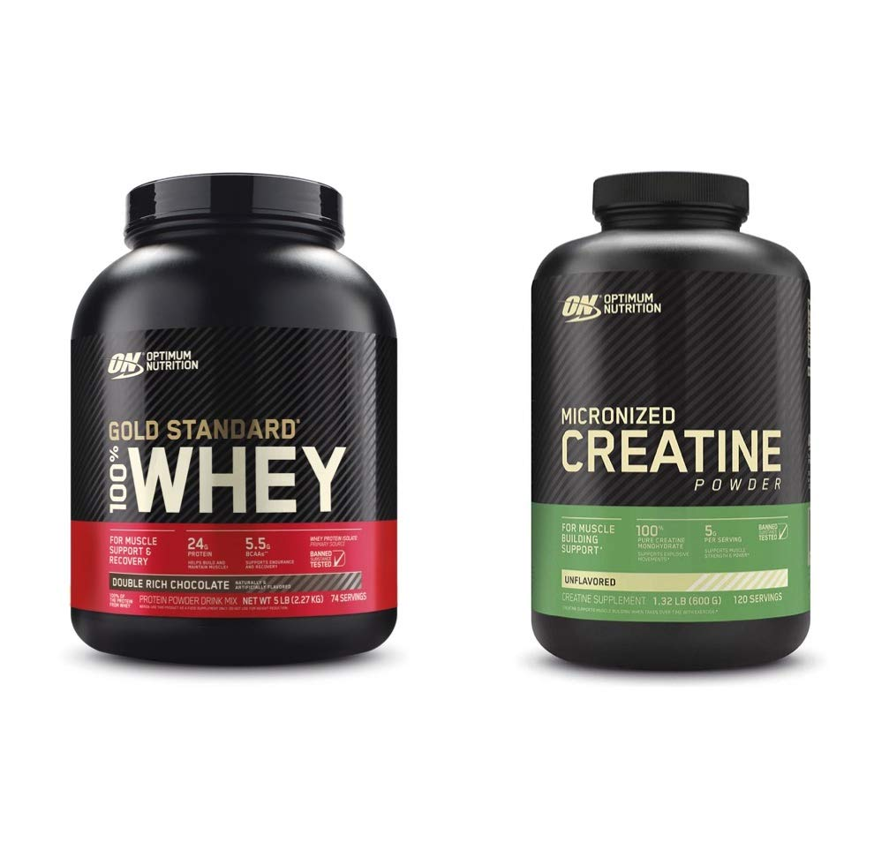
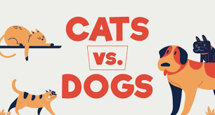

When it comes to fitness and muscle building, protein and creatine are two popular supplements that often take center stage. Both play crucial roles in enhancing athletic performance and promoting muscle growth, but they have distinct differences and unique benefits. Let's delve into the world of protein and creatine to understand how they can support your fitness goals.
While both protein and creatine are valuable supplements for athletes and fitness enthusiasts, they serve different purposes. Protein primarily aids in muscle repair and growth, while creatine focuses on boosting energy production. Depending on your specific fitness goals, you may benefit from one or both of these supplements.
To maximize the benefits, consider incorporating both protein and creatine into your supplement regimen. Protein can be consumed throughout the day to support muscle repair and growth, while creatine is typically taken pre- or post-workout to enhance performance. It's important to follow recommended dosage guidelines and consult with a healthcare professional or a registered dietitian before adding any new supplements to your routine.
In conclusion, protein and creatine are valuable assets in the realm of sports nutrition and muscle building. Understanding their differences and benefits can help you make informed choices to optimize your fitness journey. Remember, consistency, balanced nutrition, and proper training are the key factors that will ultimately lead you to your desired fitness goals.

The debate between dog lovers and cat enthusiasts has been ongoing for centuries, captivating the hearts and minds of pet owners worldwide. While both dogs and cats make wonderful companions, they possess distinct qualities that appeal to different personalities and lifestyles. In this blog post, we'll explore the age-old question: dogs or cats?
Known as man's best friend, dogs are renowned for their unwavering loyalty and unconditional love. They thrive on human companionship and are always eager to please their owners. Dogs offer a myriad of benefits, such as increased physical activity, emotional support, and enhanced social interactions. They excel in roles as therapy animals, service dogs, and even skilled working partners. The bond between a dog and its owner can be described as unbreakable, providing a constant source of joy and companionship.
Cats, on the other hand, embody an air of mystery and independence. They are self-sufficient creatures, often entertaining themselves with their innate agility and curiosity. Cats offer a unique sense of tranquility and calmness, making them ideal for individuals seeking a more low-maintenance pet. Their affectionate moments, whether it's a gentle purr or a cozy snuggle, can be incredibly rewarding. Cats are also known for their therapeutic qualities, as their presence can alleviate stress and anxiety.
Ultimately, the choice between dogs and cats depends on one's individual preferences and lifestyle. Dogs are energetic, social animals that thrive in an active and engaged environment. They require regular exercise, training, and attention. Cats, on the other hand, are independent creatures that appreciate their personal space and a relaxed atmosphere. Regardless of your preference, both dogs and cats offer companionship and love in their own unique ways. Whether you're a dog person or a cat person, the joy of having a furry friend by your side is a truly incomparable experience.
